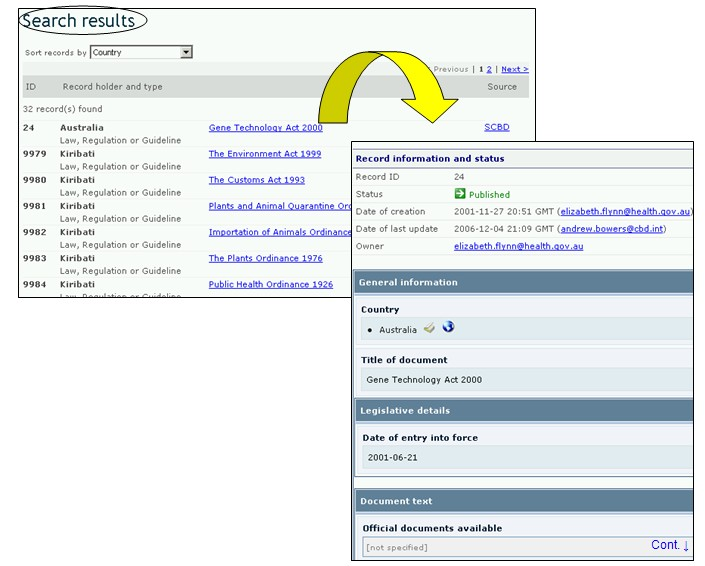

URL: http://bch.cbd.int/database/laws/
En vertu du Protocole de Cartagena, les Parties sont responsables pour rendre disponibles des informations sur leurs lois et réglementations pertinentes à travers le CEPRB.
L’interface de recherche pour trouver l’information sur les Lois et Réglementations est accessible depuis le lien dans le menu déroulant Trouver l'information sur la barre de navigation, ou depuis le lien dans le menu du côté gauche de la page Trouver l'information ou depuis le lien dans le texte des Lois et Réglementations dans la même page.

Figure 17
Cette base de données permet aux utilisateurs de chercher :
-
Des lois nationales ;
-
Des réglementations nationales ;
-
Des directives nationales ;
-
Des accords bilatéraux ;
-
Des accords multilatéraux ;
-
Des accords régionaux.
Sur la page Recherche de Lois et Réglementations il y a six boîtes de recherche de critères fournies pour affiner les recherches dans cette base de données. Chacune d’entre elles a un menu déroulant depuis lequel il est possible de sélectionner le critère requis. Pour chaque menu déroulant, le choix par défaut est le premier critère en haut de la liste du menu. A droite de chaque boîte, un bouton permet à l’utilisateur d’activer la sélection multiple. Une fois dans le mode sélection multiple il est possible d’ajouter plus de critères à la sélection en cliquant sur le critère approprié tout en pressant sur la touche Ctrl (Contrôle).

Figure 18
La Boîte 1 [Sélectionnez un Pays] liste tous les noms des pays dans un menu déroulant pour que les utilisateurs puissent sélectionner un pays spécifique ou plus pour une recherche.

Figure 19
La Boîte 2 [Sélectionner un groupe de pays] liste des régions dans un menu déroulant pour que les utilisateurs puissent sélectionner un ou plusieurs groupes de pays spécifiques pour une recherche. La liste des groupes de pays contient tous les groupes géographiques ou politiques majeurs de pays et permet de restreindre la recherche aux enregistrements soumis seulement par les membres du ou des groupe(s) sélectionnés.

Figure 20
La Boîte 3 [Type de Lois ou Réglementations] liste toutes les catégories de lois et Réglementations disponibles dans la base de données et permet à l’utilisateur de restreindre la recherche (i) aux Lois, Réglementations ou Directives Nationales ou (ii) aux Accords Bilatéraux, Régionaux et Multilatéraux.

Figure 21
La Boîte 4 [Aire des Sujets] liste les sujets des lois et Réglementations en rapport avec la mise en œuvre du Protocole. Cette liste permet à l'utilisateur de restreindre la recherche à un ou plusieurs domaines.

Figure 22
La Boîte 5 [Date de l’enregistrement] permet à l’utilisateur de restreindre la recherche à la date à laquelle le document a été enregistré dans le CEPRB. Le menu déroulant fournit un certain nombre d’options pour limiter la recherche seulement aux enregistrements soumis dans la période sélectionnée (par ex. «dernier jour», « dernier mois», « dernière année», etc.).

Figure 23
La Boîte 6 [Recherche par mot clé] fournit une opportunité d’utiliser des mots clé pour restreindre la recherche. L’utilisateur peut utiliser une syntaxe standard avec des mots clé (combinaison d’opérateurs AND / OR) pour chercher avec plusieurs mots ou parties centrales de mots (par ex. « Importation OR Exportation »). Une recherche effectuée en utilisant des mots clé donne seulement les résultats d’enregistrements contenant exactement le texte recherché et non pas les synonymes possibles qui n’ont pas été insérés (c’est-à-dire, une recherche avec un mot clé unique « maïs » donnera une liste d’enregistrements contenant le mot « maïs » mais non pas les mots « corn » ou « Zea mays »).

Figure 24

Figure 25
La page de recherche présente trois boutons pour produire une liste d’enregistrements. Le bouton Rechercher (à la fois en haut et en bas de l’interface de recherche) permet à l’utilisateur d’activer une recherche sur la base des critères de recherche sélectionnés dans les boîtes des moteurs de recherche. Les résultats de la recherche sont par défaut classés alphabétiquement par pays. Le bouton Afficher tous les enregistrements (en bas de l’interface de recherche) permet à l’utilisateur d’obtenir une liste de tous les enregistrements dans cette base de données.
Les pages des Résultats de la recherche ont un outil de classement en dessus de la liste des enregistrements. Celui-ci peut être utilisé pour classer les enregistrements selon des critères spécifiques pour cette catégorie d'information. Notez que les critères de classement changent lorsque l’utilisateur sélectionne des critères de recherche différents.

Figure 26
Exemple : Un utilisateur veut identifier des lois et Réglementations nationales dans la région d’Océanie. Il sélectionne Asie-Pacifique-Océanie dans la boîte Sélectionnez une région. Il sélectionne Lois, Réglementations et directives nationales dans la boîte Type de lois ou de réglementations. Il clique sur Les résultats de la recherche s'affichent et l'utilisateur peut sélectionner l'un des enregistrements pour étudier la documentation des pays spécifiques dans la région.

Figure 27

Figure 28